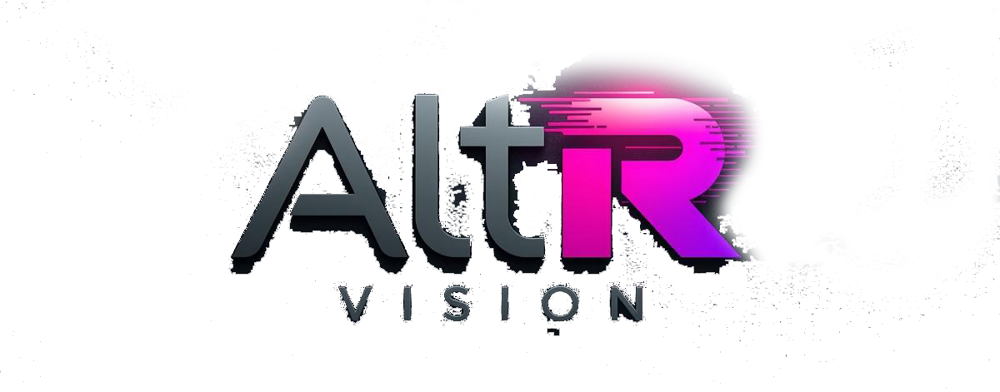
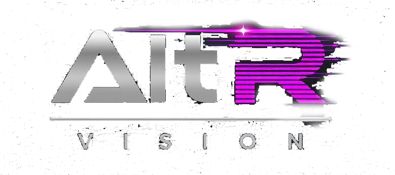
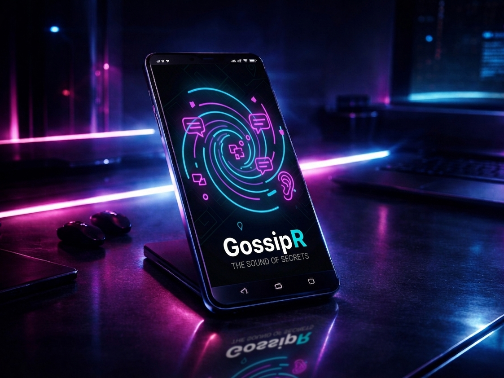
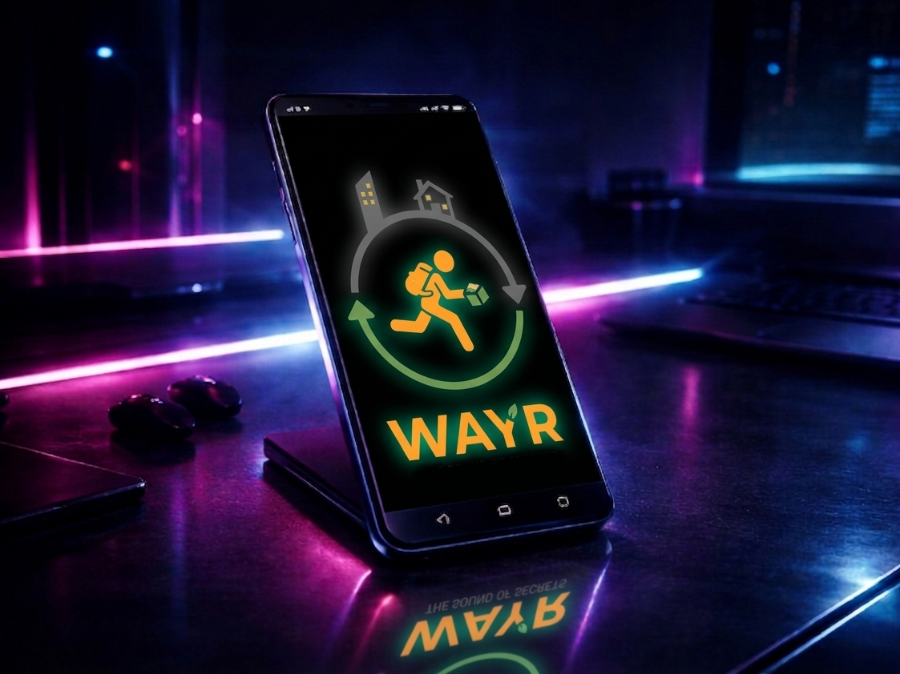
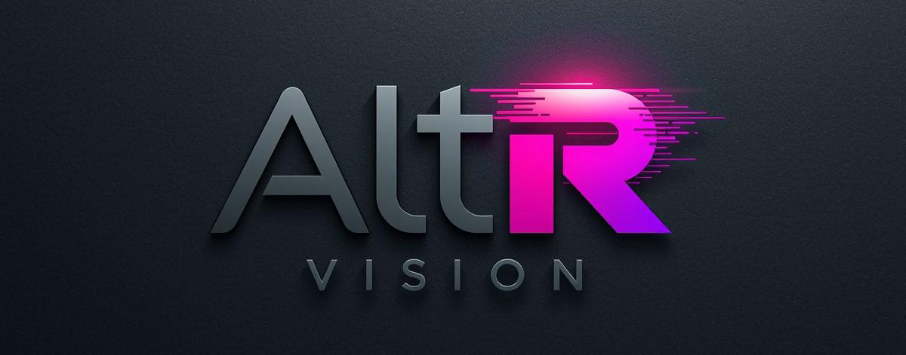

Nem steril appok, hanem kis digitális személyiségek
Szeretjük, ha egy felület nem csak hasznos, hanem az első pár másodpercben már meg is jegyzed.

Az AltR Visionnél a terméklogika és az atmoszféra együtt épül. Nem külön kezeljük a funkciót, a vizuális világot és a játékosságot, hanem ugyanannak a rendszernek a részeiként.

Szeretjük, ha egy felület nem csak hasznos, hanem az első pár másodpercben már meg is jegyzed.
A kedvenc prototípusainkban mindig van valami enyhén gyanús: rejtett szabály, fura ritmus vagy egy félmosolyra húzott mechanika.
A működő irányokat meghagyjuk furcsának, a rosszakat pedig elengedjük még azelőtt, hogy túl kényelmesek lennének.
Nem csak funkciót építünk, hanem világot is köré. Letisztult használhatóság, karakteres vizuális nyelvvel.
Prototípusok, rendszerek és hangulatok találkoznak olyan játékötletekben, amik inkább emlékezetesek, mint biztonsági játékosak.
Szeretünk gyorsan kísérletezni, de közben végig őrizzük a projekt saját hangját és rendszerlogikáját.
Az AltR Vision jelenleg különböző app- és játékirányokat tesztel párhuzamosan. A cél nem a mennyiség, hanem az, hogy minden ötletből egy felismerhető, saját atmoszférájú digitális élmény szülessen.
Olyan felületeket keresünk, amik azonnal érthetők, de közben hagynak helyet a furcsaságnak is.

Az anonim közösségi élmény újradefiniálása. Biztonságos, gyors és valódi.

A csomagszállítás új formája. Gyors, és környezetbarát!

Egy sötét, atmoszférikus kalandjáték, ami feszegeti a technológia határait.
A stúdió alapja a tesztelésből induló gondolkodás, ami idővel kreatív irányokkal rétegződött tovább: zenei produceri munkákkal, festéssel és vizuális kísérletekkel. Ezek a hatások ma ugyanabban a fejlesztői szemléletben találkoznak.
A WayR ötlete abból a hétköznapi kérdésből indult, hogy ha az emberek úgyis ingáznak munkából haza, miért ne mozoghatnának csomagok is ezekkel az útvonalakkal együtt? A GossipR később érkezett, amikor Egerben való sétálás közben egy falon hagyott sok üzenet, firka és spontán nyom kezdett el egy másfajta közösségi tér gondolatává összeállni.
Nyitottak vagyunk új együttműködésekre, prototípusokra és különös ötletekre, amiknek saját hangjuk van.